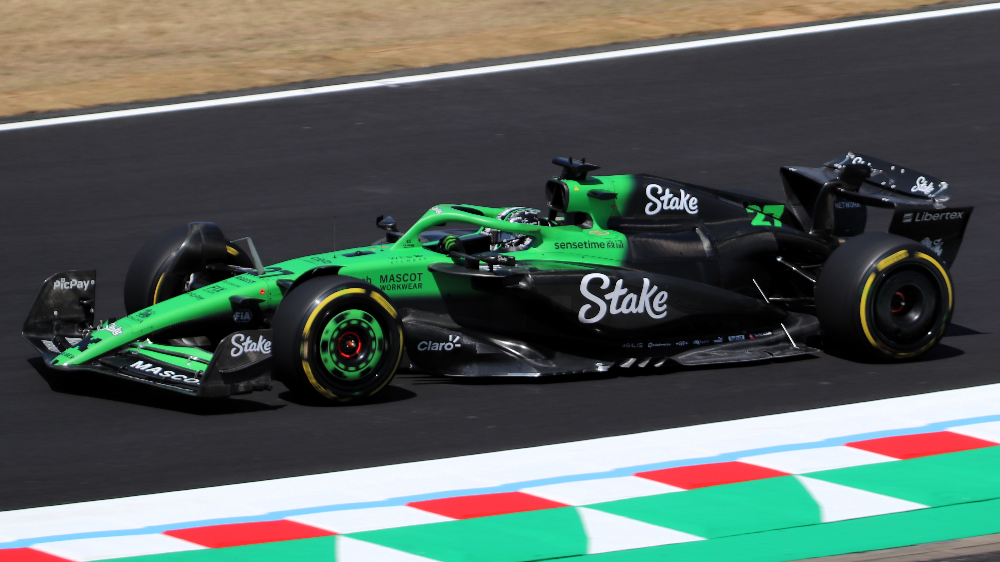

Kick Sauber

The History of Sauber
Sauber has never been a championship winning team but they have had their moments. They will become Audi in 2026 which should hopefully see some success come to the team.
Origins
Founded in 1970 by Peter Sauber in Hinwil, Switzerland, Sauber Motorsport began as an independent constructor of open two-seater racing sports cars. The company gained international recognition with the Sauber C5, which won the Interserie Championship in 1976. Transitioning into Formula 1, Sauber debuted at the 1993 South African Grand Prix, marking the beginning of its F1 journey.
Rise to Prominance
In its early years, Sauber established itself as a competitive midfield team, known for its consistent performances and technical innovations. The team achieved its first and only Formula 1 victory at the 2008 Canadian Grand Prix, with driver Robert Kubica clinching the win. This period also saw Sauber's involvement with BMW, becoming BMW Sauber from 2006 to 2009.
Recent Challenges
After BMW's withdrawal from Formula 1 in 2009, Sauber returned to the grid as an independent team. In 2017, the team entered a partnership with Alfa Romeo, rebranding as Alfa Romeo Racing. Despite the collaboration, the team faced challenges, often competing at the back of the grid. The partnership concluded at the end of the 2023 season.
